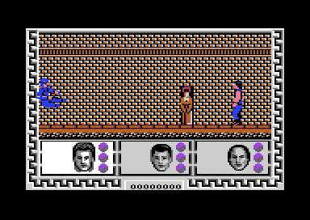

<meta charset="utf-8">
<meta name="viewport" content="width=device-width, initial-scale=1">
<title>{{title}} — discoveries</title>
<link rel="preconnect" href="https://fonts.googleapis.com">
<link rel="stylesheet" href="https://fonts.googleapis.com/css2?family=Lato:wght@400;700;900&family=IBM+Plex+Mono:wght@400;500&display=swap">
<link rel="stylesheet" href="reference/btilc-page.css">
<!-- tabs -->
<header class="hero">
  <p class="eyebrow">{{platform}} · {{year}} · {{publisher}}</p>
  <h1>{{title}}</h1>
  <p class="sub">Win the game and it tells you GAME OVER. Let an enemy past and it takes its points with it.</p>
</header>
<main class="wrap">
<section id="win">
  <p class="fig">01 · The ending</p>
  <h2 class="t">Secret: winning says GAME OVER</h2>
  <p class="lede">The game has no ending screen. Taking the prize after beating Lo Pan sets the game state to 4 (<code>$21DB</code>), and the main loop answers that with the same routine it uses when all three heroes are dead: <code>draw_game_over</code> (<code>$28FB</code>) paints GAME OVER into the street (<code>$11C6</code>).</p>
  <div class="two">
    <figure class="overview-shot"><figcaption>The prize, put in the street by hand for this test.</figcaption></figure>
    <figure class="overview-shot"><figcaption>A moment after Jack walked into it: GAME OVER, and the prize's 300 points on the score.</figcaption></figure>
  </div>
  <p>The only difference between winning and losing is the sound: a win plays the <a href="music.html#how">jingle</a> (<code>$2B44</code>), a loss one effect (<code>$2B36</code>). Both then start a new game, which waits on the title for fire. For these pictures the prize was placed beside the hero by setting its object's bytes in the emulator, rather than by playing to the temple; the code that runs when it is taken is the game's own.</p>
</section>

<section id="lost">
  <p class="fig">02 · Points</p>
  <h2 class="t">Secret: an enemy that gets past takes its points back</h2>
  <p class="lede">The score routine can subtract as well as add. When an enemy walks off the right of the screen, behind the heroes, the game rewrites three instructions of <code>add_points</code> (<code>$2633</code>) and takes the enemy's points off the score (<code>score_lost</code>, <code>$1C0A</code>).</p>
  <p>The patch turns CLC, ADC and BCS into SEC, SBC and BCC, at <code>$2650</code>, <code>$2656</code> and <code>$2662</code>. An enemy beaten in the normal way writes them back (<code>$1BE6</code>). If the subtraction would take the score below zero, the branch copies back the score saved before it (<code>score_copy</code>, <code>$2672</code>), so the score never goes negative. A man in a hat who slips past costs 2,000 points.</p>
  <p>This comes from reading the code; it was not seen in play.</p>
</section>

<section id="time">
  <p class="fig">03 · Energy</p>
  <h2 class="t">Secret: the heroes tire even when standing still</h2>
  <p class="lede">Energy is also a clock. Every 512 game loops, about 50 seconds, each hero loses a point, whether he is fighting, walking or waiting (<code>tick_energy</code>, <code>$23F6</code>).</p>
  <p>A hero has 41 points, so even a player who is never hit has about 35 minutes before the first hero falls, and all three run down together. In the emulator the timer stepped 202 times in 20 seconds with nobody touching the controls. The food bonus, every 1,500 points, is the only way to <a href="gameplay.html#bonuses">fill a bar again</a>.</p>
</section>

<section id="pause">
  <p class="fig">04 · Port 1</p>
  <h2 class="t">Secret: a second joystick pauses the game</h2>
  <p class="lede">The game is played on port 2, but the fire button on port 1 pauses it: press once to stop, again to go on (<code>pause</code>, <code>$11E0</code>). Tried in the emulator: the energy timers and the street stood still until the second press.</p>
  <p>A player with one joystick in port 2 never meets this, and the title itself waits for fire on port 1 (<code>wait_fire</code>, <code>$11EB</code>), so the first thing such a player sees is a game that will not start. The <a href="controls.html#pause">Controls page</a> has the details.</p>
</section>

<section id="unused">
  <p class="fig">05 · Left over</p>
  <h2 class="t">Secret: sounds, an army of Lo Pans, and points nobody earns</h2>
  <p class="lede">Some data in the game is never used.</p>
  <ul>
    <li><b>Two sound effects.</b> Effects 0 and 7 are in the tables but nothing asks for them (<code>start_sound</code>, <code>$2A8C</code>, has four callers, for effects 1, 4, 5 and 6). They can be heard on the <a href="music.html#effects">Sound page</a>.</li>
    <li><b>A list of four Lo Pans.</b> The spawner's table holds 13 lists of enemy kinds, but the street has only 12 sections; the thirteenth list, four 9s, at <code>$125C</code> after the twelve in <code>spawn_lists</code> (<code>$122C</code>), would bring Lo Pan every time, and is never read.</li>
    <li><b>2,500 points.</b> The points table has an entry after the prize's 300 that no event asks for, at <code>$262F</code>, the end of <code>points_table</code> (<code>$260F</code>).</li>
  </ul>
</section>
</main>
